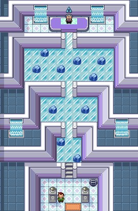

Solving Sootopolis City
In the final gym in Pokemon Ruby and Sapphire there is a puzzle you have to solve before being able to challenge Gym Leader Wallace. It's arranged like this:

To solve it, you have to step on each block of ice exactly once in each of the three sections. Not only that, but the final block you step on in each section has to be the one situated before the ice slide leading to the next section. Once all the squares are stepped on in a section the ice slide turns into stairs, allowing access to the next section of the puzzle, and finally Gym Leader Wallace.
In this article we'll build a program that solves this puzzle, and all puzzles like it, with about 50 lines of JavaScript.
Step 1: Defining the Problem
The first step to solving any type of problem is to define it. Because we are going to write a program to solve these puzzles, we need to have a means to represent all the information relevant to the problem. The fact that we're dealing with ice, or that our goal is to fight Wallce, isn't relevant. So first, we need to list out the nature of our problem, the constraints on it, and the conditions that define a solution:
- Tiles are layed out in a 2 dimensional rectangle.
- We must step on each tile of ice exactly once.
- We may not step on tiles with stones on them.
- We begin at the center of the bottom of the ice.
- We must end at the center of the top of the ice.
With those conditions we have completely defined all the relevant information in our problem. Now that this is done we can address how to represent the problem in terms a computer can solve.
Before going on, however, I should mention that there's actually a hidden assumption here: we are assuming that the same method can solve each of the three parts of the larger puzzle. In our case our assumption is obviously justified, but if the solution to one part of a problem depended on the solution to another this would not be the case. Always be careful to examine your assumptions to ensure that they're justified.
Part 2: Representing the Problem
This step often involves some aesthetic decisions, but in our case isn't particularly difficult.
The way I've decided to represent the problem in our computer program is like so:
- The tiles will be represented as a 2 dimensional array.
- Stones and tiles that have been stepped on will be represented as a 1.
- Tiles that have not been stepped on will be represented as a 0.
- The starting position will be the middle element of the final row in our 2D array.
- The final position will be the middle element of the first row in our 2D array.
This may not have been the represesntation that you had in mind, but it's what seemed sensible to me. There is rarely a single correct way to represent a problem (though there are always many wrong ways), so always be sure to consider your options. For this problem we might have used a 1 dimensional array and kept track of the number of rows and columns seperately, or we might have used booleans instead of 1's and 0's. Regardless, once a represesntation is decided it comes time to use it in order to generate solutions.
Part 3: Solving the Problem
Now comes the hard part. But also the fun part.
Given the way that we have chosen to represent our problem, we might start writing our program by creating the representation of the first part of the puzzle:
const firstPuzzle = [ [0, 0, 1], [0, 0, 0], [1, 0, 0], ];
This gives us something to work with.
Now we want to plan how we're going to generally approach the problem.
Defining the Functions
The plan that I've adopted is this: we will have three functions,
findSolutionstraversevalidate
findSolutions will be the function that coordinates our search for solutions. It will initialize the starting position and create an array solutions in which solutions will be recorded. It will also initialize the variable in which we record the paths taken.
traverse will recursively travel about the 2D array, recording where it has been, where it is, and the path it has taken. It will produce a depth-first search. This is the function that will do most of the work.
Finally, validate will be a small function that simply checks if a solution has been reached as a function of where traverse has visited and where it currently is.
That's the general scheme. Now we want to think about what sort of arguments we'll pass to each function, and then build them.
findSolutions only needs to take one argument, the 2D array representing the puzzle. We'll call this parameter puzzle, so we'll have findSolutions(puzzle).
traverse is considerably more complicated. It has to know where it has traveled, where it currently is, and the path it's taken to get there. In addition to this, it also requires access to the solutions array created in findSolutions.
Where it has traveled can be stored in a 2D array in the same format as puzzles. We will call this array board. Its current location is a combination of a row and column, so can be stored in an array in the format [row, column], which we will call place. The path it has taken will be an array of the steps it has taken so far, which we will call path. With this we will get traverse(board, place, path, solutions).
Finally, we know validate will need to know where traverse has been and where it currently is. As such, we will need to pass it board and place, yielding validate(board, place).
With the functions defined, we can now start building them.
Building the Functions
We now know the interface of our three functions:
findSolutions(puzzle)traverse(board, place, path, solutions)validate(board, place)
Now all that's left is build their implementation.
findSolutions(puzzle)
This function only needs to initialize the variables it will end up passing to traverse. We know traverse requires knowledge of where it's been, where it is, and what steps it has taken, in addition to having access to a solutions array.
As for recording where it's been, that role can be filled by puzzle itself initially. The initial position is the middle of the bottom of the board, and will be represented by the the variable start. The steps taken initially are none, and thus an empty array, and the solutions array can be initialized as an empty array.
I've produced the above behavior in code like so:
function findSolutions(puzzle) { const start = [puzzle.length - 1, (puzzle[0].length - 1) / 2]; const solutions = []; traverse(puzzle, start, [], solutions); return solutions; }
We now need to construct the function we call in the above code.
traverse(board, place, path, solutions)
To build a recursive function you need two things: a base case, and a recursive case.
Our base case is a solved puzzle. Checking whether this condition is met will be handled in validate. In our base case we append path to solutions.
In our recursive case we will look through the spaces above, below, left, and right of the current square and traverse the ones that are viable (i.e. they exist and have 0's on them).
In order for our function to be able to perform the above behavior, it first needs to mark that it has been where it currently it is. This means that it will take place and mark the corresponding spot in the 2D array that represents the puzzle thus far. We need to be careful about this, however, as board is mutable, and we want a unique copy for each call of traverse. Because of this we will create a new board newBoard and ititialize it to be equal to board, except that we'll mark the current place as 1. We'll accomplish this with the following code:
const newBoard = []; board.forEach(row => newBoard.push([].concat(row))); newBoard[place[0]][place[1]] = 1;
After this, we can check if newBoard represents a solution, and if so add add path to solutions. Given that solution-checking is handled by validate, we can do this with just two lines:
if (validate(newBoard, place)) solutions.push(path);
Now we need to handle the recursive aspect of this function. The desired behavior is to look at all the adjacent squares and traverse them if they have a 0. If this is the case we will want to create new place and path variables to pass to the next call of traverse.
The way we will do this is by creating two arrays, newPlaces and newSteps, to which we will add the new places and new steps created by the viable next steps. We will then loop through these arrays and call traverse with their data. Ignoring for now how we'll create these arrays, the code will look like this:
const newPlaces = [], newSteps = []; // code constructing newPlaces and newSteps omitted for (let i = 0; i < newPlaces.length; i++) traverse(newBoard, newPlaces[i], path.concat(newSteps[i]), solutions);
Now the only thing left to do is write the code that constructs newPlaces and newSteps.
This code isn't particularly difficult, it's mostly just tedious case-checking. We need to ensure that we're not stepping out of the bounds of newBoard, in addition to making sure where we want to step doesn't have a 1. If these conditions are met we push the new place onto newPlaces and the direction of our step onto newSteps. For checking the space above this will look like
if (place[0] > 0 && newBoard[place[0] - 1][place[1]] !== 1) { newPlaces.push([place[0] - 1, place[1]]); newSteps.push('up'); }
The other directions are very much analagous. They are as follows:
// check space to the left if (place[1] > 0 && newBoard[place[0]][place[1] - 1] !== 1) { newPlaces.push([place[0], place[1] - 1]); newSteps.push('left'); } // check space to the right if (place[1] + 1 < newBoard[0].length && newBoard[place[0]][place[1] + 1] !== 1) { newPlaces.push([place[0], place[1] + 1]); newSteps.push('right'); } // check space below if (place[0] + 1 < newBoard.length && newBoard[place[0] + 1][place[1]] !== 1) { newPlaces.push([place[0] + 1, place[1]]); newSteps.push('down'); }
And with that we've made produced traverse. The finished product is this:
function traverse(board, place, path, solutions) { const newBoard = []; board.forEach(row => newBoard.push([].concat(row))); newBoard[place[0]][place[1]] = 1; if (validate(newBoard, place)) solutions.push(path); const newPlaces = [], newSteps = []; // check space above if (place[0] > 0 && newBoard[place[0] - 1][place[1]] !== 1) { newPlaces.push([place[0] - 1, place[1]]); newSteps.push('up'); } // check space to the left if (place[1] > 0 && newBoard[place[0]][place[1] - 1] !== 1) { newPlaces.push([place[0], place[1] - 1]); newSteps.push('left'); } // check space to the right if (place[1] + 1 < newBoard[0].length && newBoard[place[0]][place[1] + 1] !== 1) { newPlaces.push([place[0], place[1] + 1]); newSteps.push('right'); } // check space below if (place[0] + 1 < newBoard.length && newBoard[place[0] + 1][place[1]] !== 1) { newPlaces.push([place[0] + 1, place[1]]); newSteps.push('down'); } for (let i = 0; i < newPlaces.length; i++) traverse(newBoard, newPlaces[i], path.concat(newSteps[i]), solutions); }
Now there's only one more function to build, and it's the simplest of the three.
validate(board, place)
All we need from this function is to check if the the current board and place represent a solution. This happens when there are no 0's on the board and we're in the middle of the top of the board. The code checking for this is rather straightforward:
function validate(board, place) { for (let row = 0; row < board.length; row++) if (board[row].includes(0)) return false; return place[0] === 0 && place[1] === (board[0].length - 1) / 2; }
And with that we have solved our problem.
Part 4: Checking the Solutions
No code, especially recursive code, should ever go unchecked. If we look at the output of
const firstPuzzle = [ [0, 0, 1], [0, 0, 0], [1, 0, 0], ]; console.log(findSolutions(firstPuzzle));
We get [ [ 'right', 'up', 'left', 'left', 'up', 'right' ] ], just as we would hope.
Repeating this for the second and third puzzles also produces valid paths:
const secondPuzzle = [ [0, 0, 0, 0, 0, 0, 0], [0, 1, 0, 0, 0, 0, 0], [0, 0, 0, 0, 1, 0, 0], ]; console.log(findSolutions(secondPuzzle));
produces
[ [ 'left', 'left', 'left', 'up', 'up', 'right', 'right', 'down', 'right', 'right', 'right', 'down', 'right', 'up', 'up', 'left', 'left', 'left' ] ]
And
const thirdPuzzle = [ [0, 0, 0, 0, 0, 0, 0, 0, 0, 0, 0], [0, 0, 0, 0, 0, 1, 0, 0, 0, 1, 0], [0, 0, 0, 0, 0, 0, 0, 0, 0, 0, 0], [1, 0, 0, 0, 0, 0, 0, 0, 1, 0, 0], ]; console.log(findSolutions(secondPuzzle));
produces, after a couple seconds of effort,
[ [ 'right', 'right', 'up', 'up', 'right', 'down', 'right', 'down', 'right', 'up', 'up', 'up', 'left', 'left', 'left', 'left', 'down', 'down', 'left', 'left', 'down', 'left', 'up', 'left', 'down', 'left', 'up', 'left', 'up', 'up', 'right', 'down', 'right', 'up', 'right', 'down', 'right', 'up', 'right' ], [ 'right', 'right', 'up', 'right', 'right', 'down', 'right', 'up', 'up', 'up', 'left', 'left', 'down', 'left', 'up', 'left', 'down', 'down', 'left', 'left', 'down', 'left', 'up', 'left', 'down', 'left', 'up', 'left', 'up', 'up', 'right', 'down', 'right', 'up', 'right', 'down', 'right', 'up', 'right' ] ]
Which are all exactly as we'd like. Feel free to check the solutions yourself.
If we really want to be sure, we could even try the puzzles from Pokemon Emerald.
I won't put the solutions, but the 2D arrays that represent these puzzles are like so:
const firstEmeraldPuzzle = [ [1, 0, 0], [0, 0, 0], [0, 0, 1], ]; const secondEmeraldPuzzle = [ [0, 0, 0, 0, 0, 0, 0], [0, 1, 0, 0, 0, 1, 0], [0, 0, 0, 0, 0, 0, 0], ]; const thirdEmeraldPuzzle = [ [0, 0, 1, 0, 0, 0, 0, 0, 0, 0, 0], [0, 0, 0, 0, 0, 0, 1, 0, 0, 1, 0], [0, 1, 0, 0, 1, 0, 0, 0, 0, 0, 0], [0, 0, 0, 0, 0, 0, 0, 0, 1, 0, 0], ];
One interesting thing to note is that findSolutions(thirdPuzzle) takes significantly longer than findSolutions(thirdEmeraldPuzzle), even though it seems like they would be the same "size" of problem. But the additional two stones in the third Emerald puzzle significantly restrains the amount of paths from nearly any point on the board: findSolutions(thirdEmeraldPuzzle) calls traverse 45,535 times, while findSolutions(thirdPuzzle) calls it 1,988,992 times, just shy of two million. That's an increase by a factor of 44 simply for adding two more viable spots.
Part 5: Reflect
Some may say step 5 is optimize™, but I feel that's premature. The code above is certainly not as optimal as it could be, as findSolutions(thirdPuzzle) can attest, but it works and is (I'd like to think) fairly readable, so there's something to be learned from it regardless.
If you'd like to see the entirety of the source code, you can do so here.